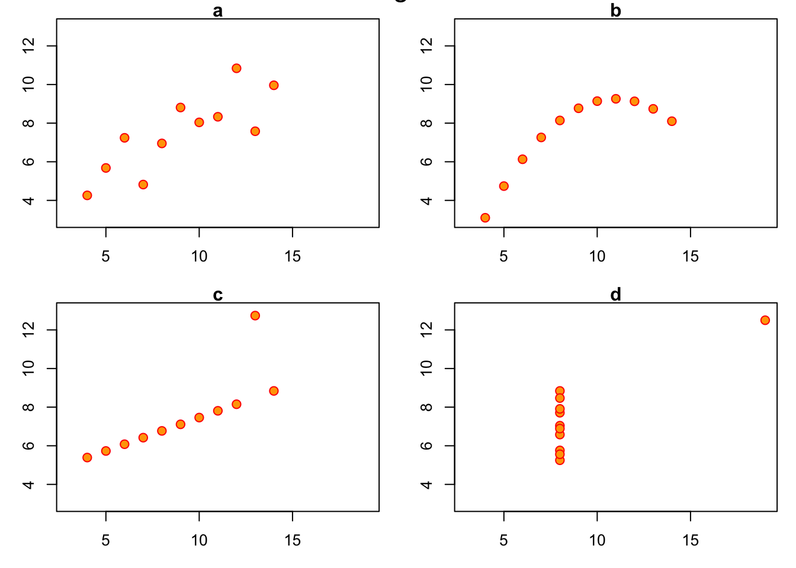
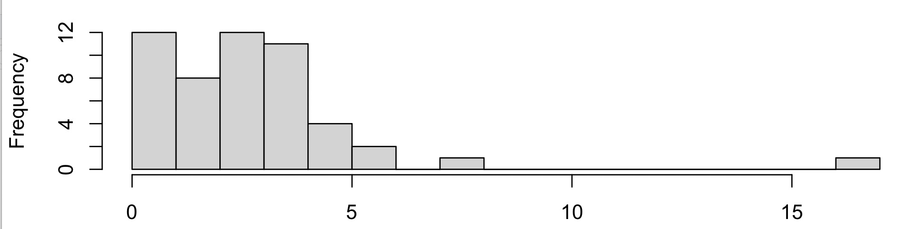
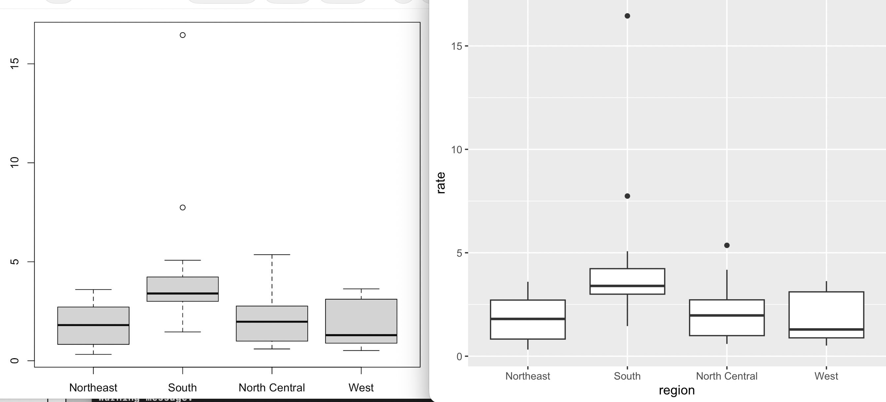
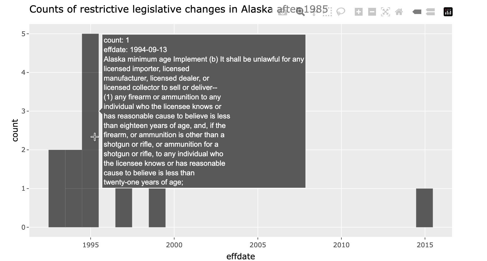

$state
[1] "character"
$abb
[1] "character"
$region
[1] "character"
$population
[1] "integer"
$total
[1] "integer"BST260 2026 midterm 1 SOLUTIONS
Keywords
Probability
Total points (of 83): ___
Q1. You are given a text file ‘states.csv’ with the following appearance.
state,abb,region,population,total
Alabama,AL,South,4779736,135
Alaska,AK,West,710231,19
Arizona,AZ,West,6392017,232
Arkansas,AR,South,2915918,93
California,CA,West,37253956,1257
Colorado,CO,West,5029196,65
Connecticut,CT,Northeast,3574097,97
Delaware,DE,South,897934,38
District of Columbia,DC,South,601723,99
Florida,FL,South,19687653,669You issue the R command z <- read.csv("states.csv") and the command succeeds. What is the result of class(z)? (1pt)
SOLUTION: “data.frame”
PURPOSE: Examine understanding of base R data ingestion process, concept of class, precision of stating “result” of a specific operation.
SCORING: data.frame with period got full marks (quoted or not), dataframe or data frame got half, all else zero.Instead of a successful read, you find R responding with
Error in file(file, "rt") : cannot open the connection
In addition: Warning message:
In file(file, "rt") : cannot open file 'states.csv': No such file or directoryHowever, you check with your operating system and find
username$ ls -tl states.csv
-rw-r--r-- 1 username staff 206 Oct 10 06:57 states.csvGive an explanation for the error event in the R session. (2pts)
SOLUTION: The path given is not correct for the given command/session.
PURPOSE: Understanding of error events, paths, current working folder.
SCORING: Should mention path or current working folder for full credit.Indicate two ways in which you might respond to achieve a successful read. (2pts)
POSSIBLE SOLUTIONS: 1) change the path given to read.csv to be correct for the working folder of your R session. 2) change the working folder of your R session.
PURPOSE: Understanding role of path and error message.
SCORING: Liberal. Full marks require attention to current working directory and full path.Assume the read.csv command succeeds. What is the result of lapply(z, class)? Be as precise as possible. You should describe the data type of the result, and as much of the content of the result as you can. (3pts)
SOLUTION: “list” should be part of the answer.
PURPOSE: Understanding *apply concept and class; attendence to request for ‘content’ of result.
SCORING: Partial credit was given for various responses.
What is the result of sapply(z, class)? Again, be precise. (2pts)
SOLUTION: “vector” should be part of the answer.
state abb region population total
"character" "character" "character" "integer" "integer" PURPOSE: Distinguish behaviors of lapply and sapply.
SCORING: Liberal, as above.Give the command that changes the class of z$region to factor. Why would you do this? (3pts)
SOLUTION:
z$region = factor(z$region)or
z |> dplyr::mutate(region = factor(region))PURPOSE: Recognize that ‘change’ implies assignment or mutation. Articulate role of ‘factor’, not significantly handled in the course to date.
SCORING: 1 point for assignment or mutation, 1 point for invokingfactor(), 1 point for explanation
Q2. In problem set 3 we used
> cdcmurd <- read.csv("https://tinyurl.com/cdcmurder")Many users succeeded with this command. When one user tried it, the result was:
Error in file(file, "rt") :
cannot open the connection to 'https://tinyurl.com/cdcmurder'
In addition: Warning message:
In file(file, "rt") :
URL 'https://tinyurl.com/cdcmurder': status was 'Couldn't resolve host name'What is a likely explanation for the error? (1pt)
SOLUTION: no network access
PURPOSE: Recognition of frailty of network operations to retrieve data
SCORING: For full marks, mention network issueOnce the read.csv succeeds, what is the result of save(cdcmurd, file="cdcmurd.rda")? Be as precise as possible. (2pts)
SOLUTION: creates file cdcmurd.rda in current folder and populates it. RDA format is specific to R.
PURPOSE: Understand serialization process.
SCORING: Must mention “create” and some aspect of data format for full marks.After the successful read.csv command above, one user found:
> cdcmurd |> names()
[1] "YEAR" "Location" "Death.Rate" "Deaths" "URL"
> cdcmurd |> filter(location == "NY")
Error: object 'location' not foundWhy would this happen? (1pt)
SOLUTION: lower case ‘l’ “location” is not in scope
PURPOSE: Attendance to case significance; recognition of semantics of “filter”
SCORING: LiberalThen they found
> cdcmurd |> filter(Location == "NY")
Error: object 'Location' not found
Why? (2pts)
SOLUTION: Without explicit use of dplyr this invokes stats::filter which will not find Location.
PURPOSE: Attendance to case significance; recognition of semantics of “filter”
SCORING: one point for reference to dplyr (notice that it is used in the next problem, you thus had a chance to go back), and one point for recognizing “filter” must be used properly. A number of students proposed that the task should address column selection, which is a misconception.Q3. You are in a fresh R session. Assuming the dplyr package is installed, what is the result of executing the following command? Address as many effects on the R session as you can. (3pts)
library(dplyr)SOLUTION: 1 pt for searchlist updated, 1 pt for functions available by name, 1 pt for doc available
PURPOSE: library is very important and has different side effects worthy of attention.
Q4. We run the code
tt = replicate(1000, sample(1:52, size=1))and find that
> mean(table(tt))
[1] 19.23Why? (2pts)
SOLUTION: It is sufficient to show \(19.23 = 1000/52\) but more details are welcome. sample as used draws a random value from 1:52, replicate does it repeatedly, table collects the frequencies with which each value is drawn. The average frequency should be close to 1000*1/52 as each number had equal probability 1/52 of being drawn.
PURPOSE: Explores capability of breaking down concise “workflows” to simulate and report on random processes.
SCORING: It was sufficient to show the math. Any text supplied had to make sense or score would be reduced.Q5. After running the following code chunk, what is the value of x? (2pts)
x <- 3
my_func <- function(y){
x <- 5
y+5
}
my_func(4)SOLUTION: 3
PURPOSE: Understand local vs. global scope of assignment actions.
SCORING: StrictQ6. The sum of the first \(n\) positive integers can be expressed as \[ S_n = \sum_{i=1}^n i = \frac{n(n+1)}{2} \] What is the value of \(S_{10}\)? (1pt)
Write two R statements that evaluate \(S_{10}\), one of which involves a vector. (2pts)
SOLUTIONS: 55, sum(1:10), 10*11/2, etc.
PURPOSE: Gift.
SCORING: Strict.Write an R function called sumn that computes \(S_n\) for any positive integer input \(n\). (4pts)
SOLUTION: Various possible; in class we will see an agentic solution of interest.
PURPOSE: Authoring functions, recognition of conditions specified in problem.
SCORING: 1 point for function definition, 1 point for detecting and stopping on non-positive input, 1 point for detecting and stopping on non-integer input, 1 point for computing a correct answer with suitable input.Q7. Consider the sequence of R commands:
txt = c("to be or not to be", "that is the question")
stxt = strsplit(txt, " ")What is the class or type of stxt? (1pt)
SOLUTION: list
PURPOSE: Understand behavior of strsplit on vector input.
What is its length? (1pt)
SOLUTION: 2
PURPOSE: as above
SCORING: StrictThe result of strsplit(txt[2], "")[[1]] is a vector. What is its length? (1pt)
SOLUTION: 20
PURPOSE: Distinguish role of splitting by empty string (which was used repeatedly in class).
SCORING: StrictWrite out the first five elements of this vector. (1pt)
SOLUTION: “t”, “h”, “a”, “t”, ” ”
PURPOSE: Attend to indexing, strsplit behaviors, spaces as strings.
SCORING: StrictConsider mys <- strsplit(txt[2], "")[[1]]. What is the value of table(mys)["t"]? (2pts)
SOLUTION: a ‘table’ instance with named value 4
PURPOSE: Attend to behavior of table, indexing.
Q8. Anscombe’s quartet is a collection of bivariate datasets.

For each display, a to d, provide a concise description (10 words or less) of the data configuration in your own words. (4pts)
SOLUTION: Text should include concepts: a) apparent linear association with error in response, b) apparently quadratic relation, c) strict linear with “outlier”, d) variability in y for one x value, with one aberrant (x,y) point.
PURPOSE: Demonstrate use of clear language to describe data displays.
SCORING: LiberalQ9. Here are the anscombe datasets.
> anscombe
x1 x2 x3 x4 y1 y2 y3 y4
1 10 10 10 8 8.04 9.14 7.46 6.58
2 8 8 8 8 6.95 8.14 6.77 5.76
3 13 13 13 8 7.58 8.74 12.74 7.71
4 9 9 9 8 8.81 8.77 7.11 8.84
5 11 11 11 8 8.33 9.26 7.81 8.47
6 14 14 14 8 9.96 8.10 8.84 7.04
7 6 6 6 8 7.24 6.13 6.08 5.25
8 4 4 4 19 4.26 3.10 5.39 12.50
9 12 12 12 8 10.84 9.13 8.15 5.56
10 7 7 7 8 4.82 7.26 6.42 7.91
11 5 5 5 8 5.68 4.74 5.73 6.89Write out the result of apply(anscombe,2,max). (3pts)
SOLUTION:
x1 x2 x3 x4 y1 y2 y3 y4
14.00 14.00 14.00 19.00 10.84 9.26 12.74 12.50 PURPOSE: Attend to meaning of apply.
Here are some manipulations of the anscombe dataset in plot “b” of Q8.
rbind(deltay= diff(anscombe[order(anscombe[,"x2"]),"y2"]),
xmid= (sort(anscombe[,"x2"])[-11]+.5))
[,1] [,2] [,3] [,4] [,5] [,6] [,7] [,8] [,9] [,10]
deltay 1.64 1.39 1.13 0.88 0.63 0.37 0.12 -0.13 -0.39 -0.64
xmid 4.50 5.50 6.50 7.50 8.50 9.50 10.50 11.50 12.50 13.50Explain what is going on in the creation of the row deltay. (3pts)
Use the relationships between the rows of the matrix above to identify where on the x axis the values of deltay “change sign”. (1pt)
Sketch this x position on the graph for dataset “b” in Q8 with a
vertical line. (1pt)
SOLUTIONS: “Explain” was handled well by many students. Unravel the code from inside. The rows of the anscombe data are reordered and column y2 is isolated with elements ordered to correspond with increasing values of x2. diff computes successive differences (second - first), (third - second) and so on. xmid is computed as midpoints of ordered elements of x2, dropping the last to conform to the vector of differences. deltay changes sign between elements 7 and 8, so around xmid value 11.
PURPOSE: Reading messy code, understanding diff, midpoint creation.
SCORING: Liberal. Language had to make sense; graph needed to have a line as requested.Recall that in Problem set 2, we defined a function to “trace through” the points in the scatterplot for (x2, y2). It had the form
\[ f(x) = c + 2.78x -.127x^2 \]
We can find the position of the extremal value of this \(f(x)\) by taking the first derivative with respect to \(x\) and finding the value of \(x\) at which the derivative is zero. For this \(f\), we get \[ x_{max} = \frac{2.78}{2 \times 0.127} = 10.94 \] How does this agree with your choice of where to position the vertical line in the graph for dataset “b”? (2pts)
In what way does the deltay row of the matrix above relate to the first derivative with respect to \(x\) of \(f(x)\) defined above? (2pts)
SOLUTION: Agreement was reasonable
PURPOSE: Exercise a little bit of calculus.
SCORING: LiberalQ10. Consider the dslabs murders dataset that we have spent much time with.
Describe precisely the consequences of the command (3pts)
murders$rate = 1e5*(murders$total / murders$population)SOLUTION: 1 pt for “updates the murders data frame with a new column”, 1 pt for computing the rate, 1 pt for taking the product to scale the rate to events per 100000
PURPOSE: Evaluate understanding and precision of description of rate calculation and assignment
SCORING: StrictGiven the rate computation just performed, tell what command produces (2pts)

Add an appropriate x-axis label. According to this diagram there is a group of four states sharing approximately the same murder rate. What is your guess at this rate? (2pts)
SOLUTION: The text of the exam is unclear here because of the “2pts” after “produces”. Students were intended to explain the command that produces the diagram, which was hist(). The x-axis label could read “number of murders per 100000 population in US states”. The guess at the rate should have been around 4.5 per 100000.
PURPOSE: Recognition of the way in which such a diagram is produced, value of accurate labeling of axes, reading histogram.
SCORING: Liberal.Here are two displays of variation in murder rate stratified by region.

Given the computations on murders described thus far, provide the commands that would produce these displays. Include any necessary library commands. (4pts)
LEFT:
RIGHT:
SOLUTION: LEFT: boxplot(split(murders$rate, murders$region)).
RIGHT: ggplot(murders, aes(x=region, y=rate)) + geom_boxplot()
PURPOSE: Distinguish base R graphics from ggplot2. Demonstrate methods of grouping.
SCORING: Not scored. Printing was not clear enough.Q11. What does mean(murders$total > 500) measure? (2pts)
SOLUTION: Proportion of states with total murder count exceeding 500
PURPOSE: Role of taking average of an indicator (logical) variable.
SCORING: StrictQ12. The goal is the three states with the most murders.
murders |> arrange(total) |> head(3) |> pull(state)This runs without complaint and returns “Vermont”, “North Dakota”, “New Hampshire”. Fix the code. (2pts)
SOLUTIONS: Q12-Q16 are very straightforward, test basic understanding of syntax and semantics of R and ggplot2.
SCORING: StrictQ13. Above we gave the code to compute a vector of rates, one per state. Suppose we compute a “common rate” as
comm = sum(murders$total)/sum(murders$population)How would you compute an expected number of murders for a state with population ten million? (3pts)
Q14. The goal is to extract from the murders dataset the row for Texas. What is the error in this command, and how is it to be repaired? (2pts)
murders[murders$state = "Texas", ]Q15. The goal is to create a vector of names of western states that have fewer than 50 murders. This command was attempted:
murders$state[murders$region == "West" | murders$total < 50]This returns 23 names, but only 7 states meet the goal. Explain the extra 16, then repair the code. (2pts)
Q16. A student wrote
library(ggplot2)
ggplot(murders, aes(population, total)) |> geom_point()R stops with mapping must be created by aes(). What is wrong, and what is the repair? (2pts)
Q17. In our work with RAND corporation gun legislation data, we created an interactive display.

Describe the software components underlying this type of display. The base graphics use ggplot2; what geom is used? What package is necessary to get the text-on-hover behavior, and what operation transforms the graphical object to an interactive browsable artifact? (4pts)
SOLUTION: 1 pt for indicating that the basis of the computations is a data.frame, 1 pt for indicating use of ggplot2 or geom_histogram, 1 pt for indicating that aes must include some text parameter to manage hover behavior, 1 pt for indicating role of plotly/ggplotly.
PURPOSE: To assess recollection of the work done with gunleg.qmd.
SCORING: Strict.